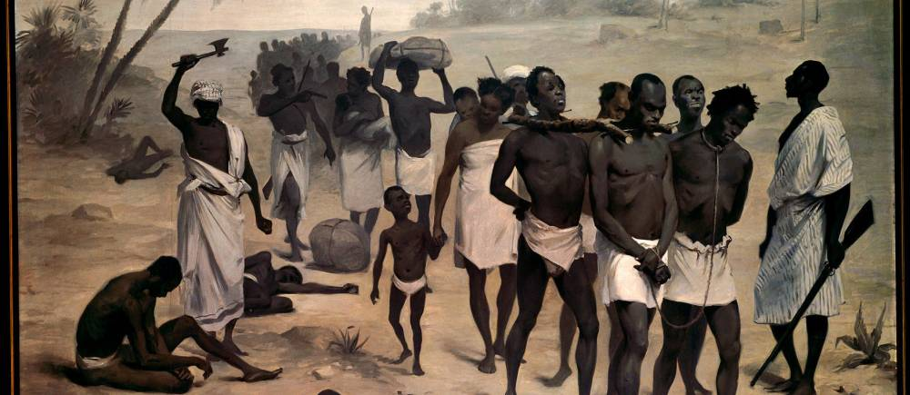
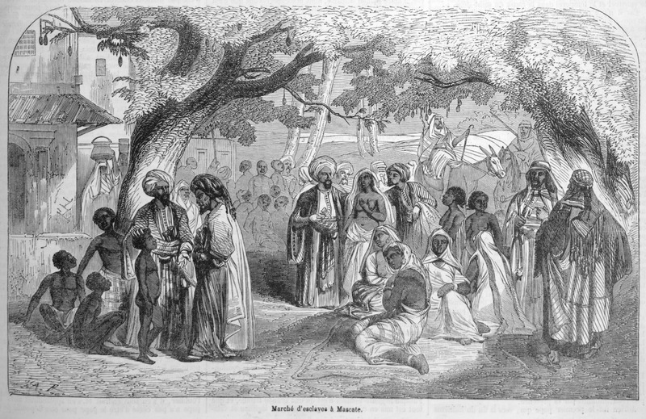
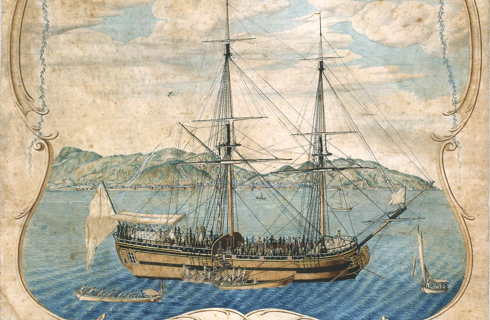

En Afrique, le commerce d’esclaves n’apparaîtra qu’au VIIème siècle après Jésus-Christ avec la conquête Arabe, puis celle des pays Européens. Avant cette date nous parlions de « traite » intra-africaine car les esclaves provenaient de prises de guerre.
 En l'absence de données vérifiées, sourcées et certifiées étant donnée l'absence total d'écrits retrançants les époques et les prises de guerres, il m'est impossible de représenter aux travers de graphiques ou de cartes, les élémenrs correspondant à la traite intra-africaine.
La traite Orientale est parmi les trois traites, la plus importante en termes de nombres de déportés, mais également en termes de durée. En effet, elle aurait concerné près de 17 millions d’Africains sur une période de près de 13 siècles.
 Malgré des données plus ou moins précises s'agissant de l'esclavage orientale, celle-ci à l'image de la traite intra-africaine manque cruellement de données vérifiées, sourcées et certifiées rendant impossible une représentation cartographique ou graphique.
Des trois traites, la traite occidentale est de loin, la plus étudiée, la mieux documentée et surtout la plus intense. Celle-ci débuta au XVème siècle lorsque le Portugal, s’aventura sur le littoral Africain et prendra fin au milieu du XIXème siècle après un total d'esclaves capturés et marchandés d'environs 11 millions.

Comme évoqué dans la petite introduction, la traite occidentale durera 4 siècles et fut considérée comme la plus intense des trois traites. Il est normal de la considérer comme tel, car le nombre total d'esclaves déportés proportionnellement à sa durée est bien supérieur aux autres. En effet, comme nous pouvons le constater sur le graphique ci-dessus, c'est essentiellement entre les années 1725 et 1850 que la traite concentre la majeur partie de ses déportations, nous faisant encore plus comprendre l'extrême intensité de celle-ci.
Sur les plus de 10 600 000 esclaves embarqués sur les côtes africaine, une très large majorité sont des hommes. Ils représentent 64,5 %, suivi par les enfants qui représentent 21,5% et enfin les femmes qui représentent 14% des esclaves.
Les plus de 10 M de personnes embarqués, ne débarquez pas tous sur les côtes américaines. En effet, le trajet étant de longue durée, environ une soixantaine de jours, de nombreuses personnes perdaient la vie, environ 12% soit 1,5M de personnes.
created with
Website Builder Software .